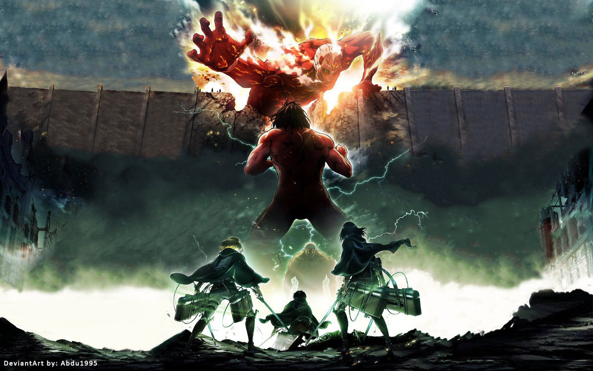
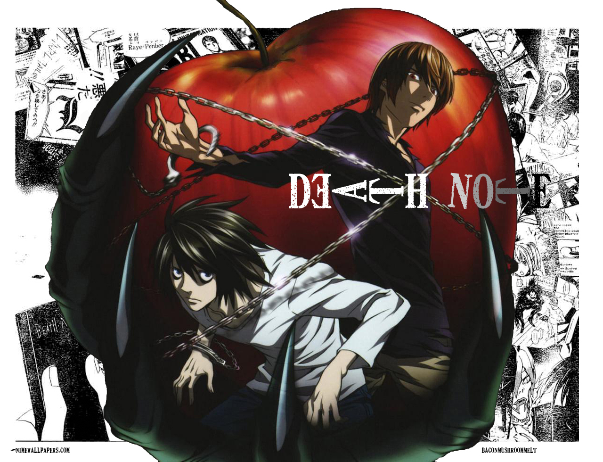
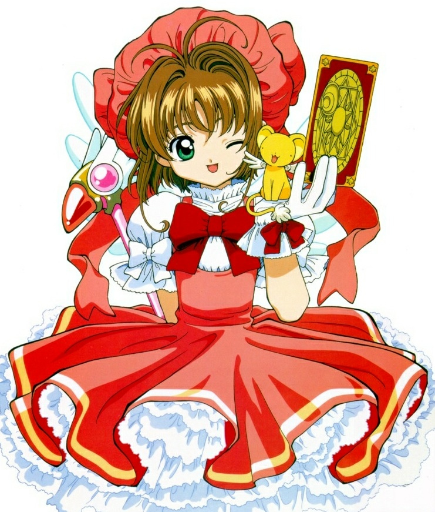
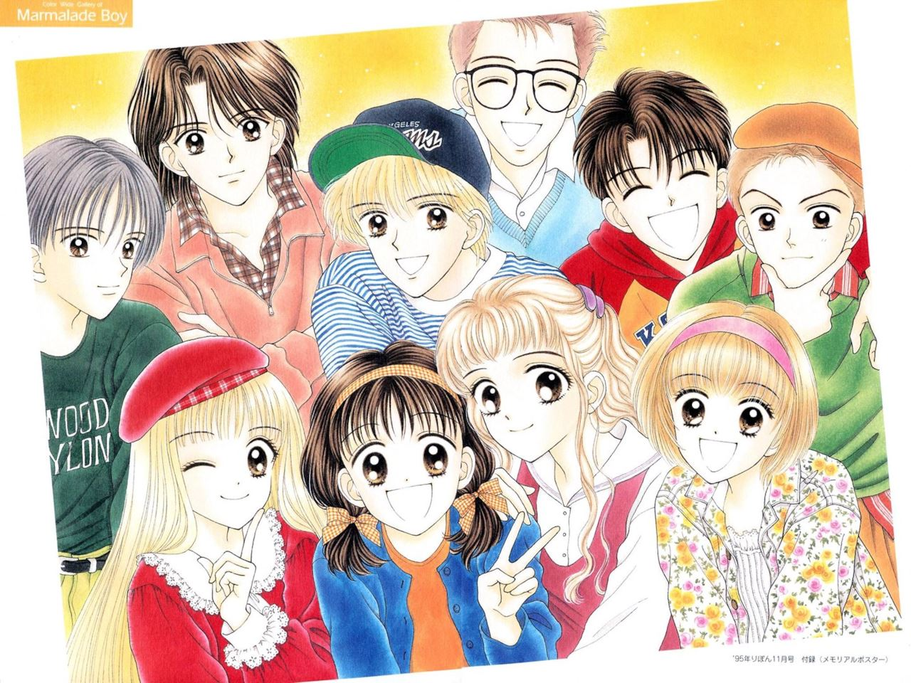
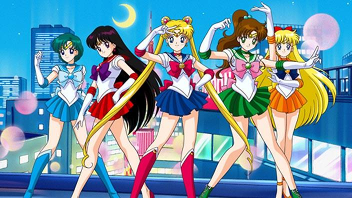
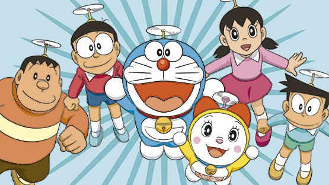
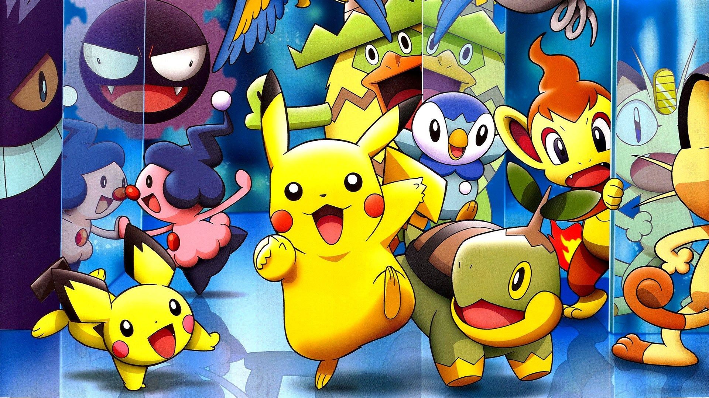
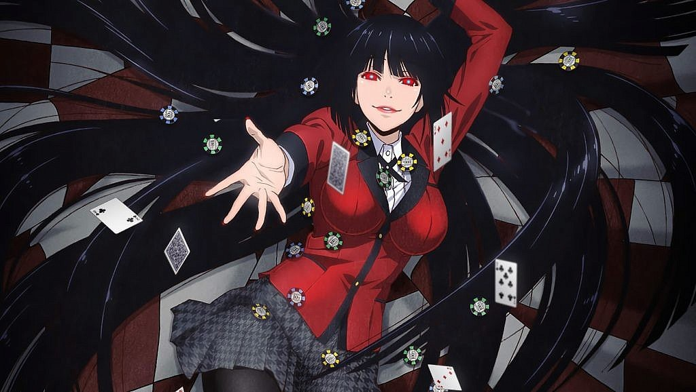
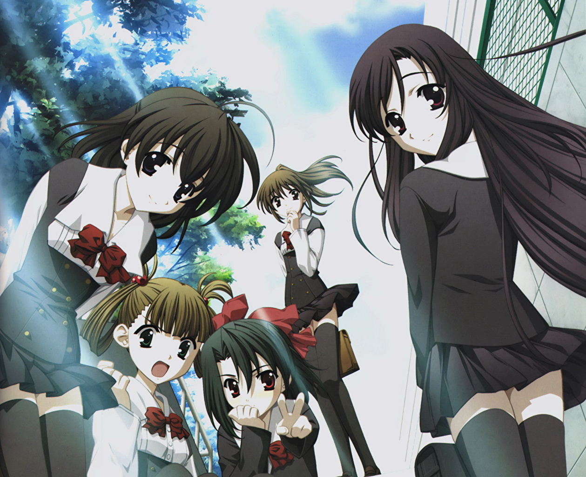

Shōnen
Son series con grandes dosis de acción, a menudo situaciones humorísticas con protagonistas masculinos. El compañerismo entre adolescentes o adultos de un equipo de combate, también suele subrayarse en un shōnen. También suele haber personajes atractivos femeninos. Está destinado principalmente al público masculino joven.
Shingeki No Kyojin
La historia de Shingeki no Kyojin nos traslada a una época en la que la humanidad ha estado al borde de la extinción debido a la existencia de los titanes. Unos seres gigantes aparentemente sin inteligencia cuyo objetivo no es otro que devorar humanos a pesar de no necesitarlos para sobrevivir. Los pocos supervivientes han levantado tres muros más altos que cualquier titán, donde viven pacíficamente sin el miedo de ser devorados por los gigantes. La humanidad ha vivido tranquila durante más de 100 años hasta que en el año 845 aparece de la nada un titán más alto que los muros construidos para protegerse y crea una brecha en uno de ellos permitiendo que todos los titanes se abran paso hacia el interior. En ese momento, la humanidad recibe el recordatorio de que viven con miedo a ser devorados por los titanes.
Death Note
La historia se centra en Light Yagami, el mejor estudiante de preparatoria de japón encuentra un cuaderno sobrenatural llamado «Death Note», el cual es capaz de matar personas si se escriben los nombres de éstas en él mientras el portador visualiza mentalmente la cara de quien quiere asesinar. Light intenta eliminar a todos los criminales y crear un mundo donde no exista la maldad, pero sus planes serán frustrados por L, un famoso detective privado al cual se comienza una trama tratando de descubrir quien es kira.
Sword Art Online
En el año 2022, el videojuego virtual de rol multijugador masivo en línea (VRMMORPG) Sword Art Online (SAO) es puesto en venta. Con el Nerve Gear, un casco de realidad virtual que estimula los cinco sentidos del usuario a través de su cerebro, los jugadores pueden experimentar y controlar a sus personajes dentro del juego con sus mentes. Pero un acontecimiento inesperado se produce el 06 de Noviembre de 2022 (primer día de inicio del servidor) cuando Akihiko Kayaba, el creador de SAO, impide a los jugadores hacer log out (cerrar sesión). Akihiko les propone un reto, si quieren ser libres y salir del juego, deben llegar al piso 100 de la torre del juego y derrotar al jefe final. Sin embargo, si sus avatares mueren en el juego, también lo harán sus cuerpos en el mundo real. Kirito, que es un "BetaTester", es decir, un jugador experto que probó la versión beta del juego, está decidido a llegar al piso 100 y alcanzar la libertad. Ahora tendrá que pasar cada nivel o cada piso sin morir, con la ayuda de Asuna otra jugadora con quien formará equipo.

Shōjo
Género destinado principalmente al público femenino joven, ya que se tratan temas que llaman la atención del publico femenino, como son temas de amistad, comedia, compañerismo y de romance desde el punto de vista femenino.
Card Captor Sakura
La historia se centra en Sakura Kinomoto, una niña que obtiene unos extraños poderes mágicos después de liberar accidentalmente un conjunto de cartas de un libro. Tras esto, Sakura se ve obligada a recolectar y cuidar las Cartas Clow para evitar una catástrofe en el mundo.
Marmalade Boy
Miki Koishikawa, una estudiante de 15 años, cuyos padres realizan un intercambio de parejas con la familia Matsura, que tiene un hijo de su edad, Yuu. Los padres deciden vivir bajo el mismo techo con sus hijos, y Miki, que se muestra reacia al principio, poco a poco se enamora de su hermanastro.
Sailor Moon
Serena Tsukino es una niña de 14 años con una vida común y corriente; un día encuentra repentinamente una gata que habla llamada Luna, ésta le da a Serena un prisma mágico y le revela que ella es la legendaria guerrera de la justicia que estaba buscando, aquella que hace cientos de años defendía su hogar y que ahora deberá retomar su posición y salvar a la Tierra de la malvada Reina Beryl, quien ha regresado y busca conquistarla, lo cual fue impedido en el pasado por el Reino Lunar. Es así como Serena se transforma en Sailor Moon y deberá luchar contra las fuerzas del mal en nombre del amor y la justicia junto a sus 4 amigas Sailor Scouts y Tuxedo Mask.
Kodomo
Género destinado al público infantil o preadolescente. Se distingue por la ausencia de fanservice u otros elementos destinados a audiencias más adultas. Las historias están caracterizadas por el uso de temas y conceptos para los niños y la familia.
Doraemon
Doraemon, un gato azul sin orejas, viene desde el siglo XXII, y en realidad es un gato-robot. Tiene un bolsillo mágico del que puede sacar los más sorprendentes artilugios. Aunque a veces sale mal parado por las travesuras de Nobita, su magia no tiene igual. Pero no está sólo, ya que le acompañan sus amigos. Juntos forman una divertida pandilla.
Pokemon
En Pueblo Paleta, todos los niños y niñas están fascinados por el mundo de los Pokémon, unas criaturas de diferentes formas y colores que cuentan con unos poderes muy especiales. Ash Ketchum es uno de ellos, un niño de 10 años que sueña con llegar a ser el mejor entrenador Pokémon del mundo, por lo que visita al profesor Oak, una autoridad en la materia. El profesor le informa que lo primero que debe hacer es escoger un Pokémon. Ash escoge a Pikachu.
Digimon
cuenta una historia centrada en 8 niños de Japón, que son trasportados al Digimundo para salvarlo, llegando a la Isla File. Allí encontrarán tanto a sus compañeros digimons como a sus Digivice (o dispositivos digitales).

Gakuen
Este genero se desarrolla en el ambiente escolar, todas las relaciones y emociones giran en torno a los estudiantes.
Kakegurui
La famosa academia privada Hyakkaou tiene un sistema de clases sociales. Lo más alto de la escuela es el consejo estudiantil, el cual está controlada por las apuestas. Si ganas podrás entrar al cielo, pero si pierdes, al infierno. En esta academia insana, aquellos que son buenos en las apuestas son la envidia de todos, y aquellos que no lo son, sufren. Un día, una chica se transfiere a esta academia, Una chica llamada Yumeko Jabami…
Kare Kano
La historia trata de una chica llamada Yukino Miyazawa, que desde pequeña quiere ser la mejor en la escuela para que todos la admiren. Pero cuando entra al instituto se topa con una competencia, Sôichirô Arima, quien de inmediato se convierte en el centro de admiración de todos, en especial de las féminas, por su atractivo, gentileza e inteligencia, quedando Yukino relegada al segundo plano, lo que no la deja muy contenta, deseando así derrotarlo para volver a ser la número uno. Pero después de muchas "circunstancias" se da cuenta de que no es precisamente odio lo que siente por él y poco a poco ella va descubriendo su mundo interior y en ese camino también el de Arima.

School Days
Makoto Itou es un estudiante de secundaria que se ha enamorado de una chica que vió en el tren, su nombre es Kotonoha Katsura. Makoto se sienta en clase al lado de Sekai Saionji, quien se da cuenta de su amor por Kotonoha y decide ayudarle a conquistarla. Sekai consigue unirlos, pero se da cuenta de que a ella también le gustaba Makoto y en la parada del tren, antes de marcharse le besa. La historia trata sobre éste triángulo amoroso y demás historias de los compañeros de clase.
